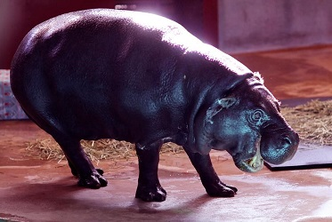
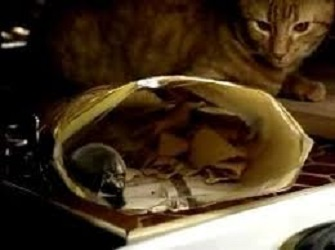
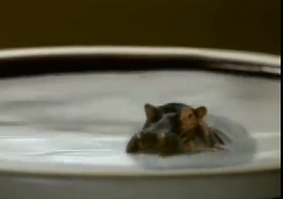
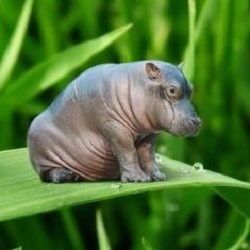
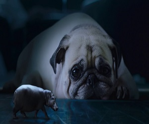
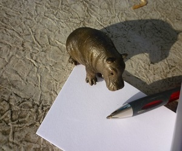
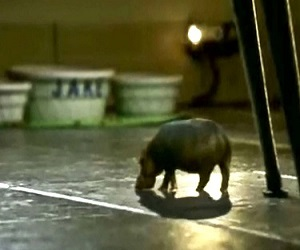
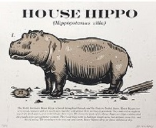

Find All of the Adorable Pictures of The House Hippo Here

As you can see from this photo, The North American House Hippo is a fierce animal and will protect itself when threatened. Make sure to introduce your other pets slowly to avoid problems.

Careful when leaving leftovers out because these North American House Hippos are notorious for stealing your scraps. Sometimes people have found the House Hippos in their fridge!

Even if you happen to step away for even a few minutes, the North American House Hippo could end up taking a swim in your milk.

As you can see from this photo, the North American House Hippo is a very agile animal. It can redistribute its weight to be able to walk on things even as gentle as a leaf.

Unless other animals threaten the North American House Hippo or threaten their young, they are generally very mild around other animals, like your beloved pets.

A little know fact about the North American House Hippo is that they are avid writers. So if you leave your pen and paper lying around, don't be surprised to find some notes taken by the hippos.

The North American House Hippo likes to get exercise. They love to roam free throughout your whole house if you let them. Think about getting a tracking collar so that you can find your little friends when they go exploring.

There has been a lot of scientific research on the North American House Hippo and other House Hippos worldwide. However, scientists do not know a lot about their origins and how they got so small.